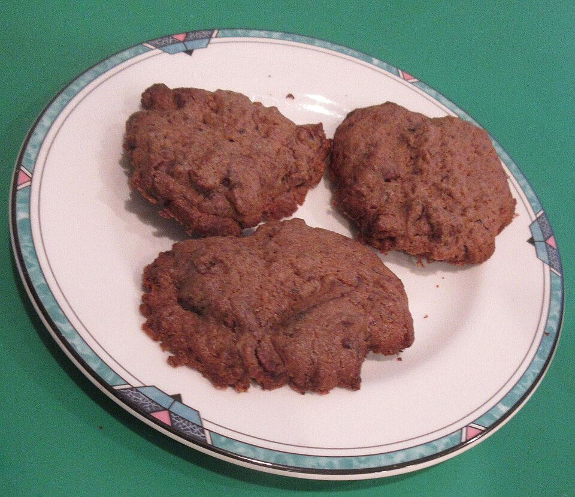

Doces · Biscoitos
Biscoitos de chocolate

Ingredientes
- 1 xícara de margarina
- 4 colheres de açúcar
- 1 e ½ xícaras de farinha de trigo
- 2 colheres de maizena
- 3 colheres de chocolate em pó
Modo de preparo
- Na tigela, misture a margarina e o açúcar.
- Junte os demais ingredientes e misture bem com as mãos.
- Faça bolinhas achatadas e coloque em assadeiras sem untar.
- Se desejar, use um carimbo de biscoitos para decorar.
- Asse por 20 minutos.
Observação
Receita do kit Carimbo UG; o carimbo é opcional.